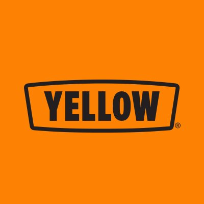
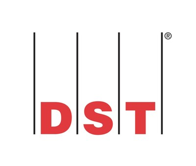

Shamrock Trading Corp
EDI Specialist
Sept 2022 - Present
- Responsible for all EDI implementations, support, troubleshooting for Shamrock's Ryan Transportation brand
Stord
Integration Engineer
March 2021 - May 2022
- Designed and implemented core API process flows integrated with the core warehouse management system, accomodating all company owned warehouses and their 30+ integrated customers.
Integration Specialist
May 2022 - September 2022
- Onboarded several clients during phases of project management, technical development, utilizing API connections, json, xml, EDI data
Yellow Freight

EDI Developer
June 2018 - March 2021
- Designed, implemented and tested mapping and business process migrations from legacy EDI system to the Sterling Integrator platform utilizing xslt transformations and EDI mapping.
- Designed and implemented generic and customized data mapping/business process code for API, csv, EDI load tendering, EDI shipment statusing, and EDI invoicing for Yellow Corp Logistics customer onboarding to the Sterling Integrator platform.
National Association of Insurance Commissioners
Developer Intern
August 2017 - May 2018
- Designed and implemented insurance filing retention UI for a Java based insurance filing web application
- Wrote test suites for UI components utilizing Java Selenium testing module
DST

Technical Intern
May 2017 - August 2017
- Utilized Windows powershell scripting to generate attestation files for employee audits adhering to SOC1/SOC2 federal compliance
- Assisted with authentication software upgrade by creating SQL queries/use cases to find inconsistencies in employee account names, groups and permissions